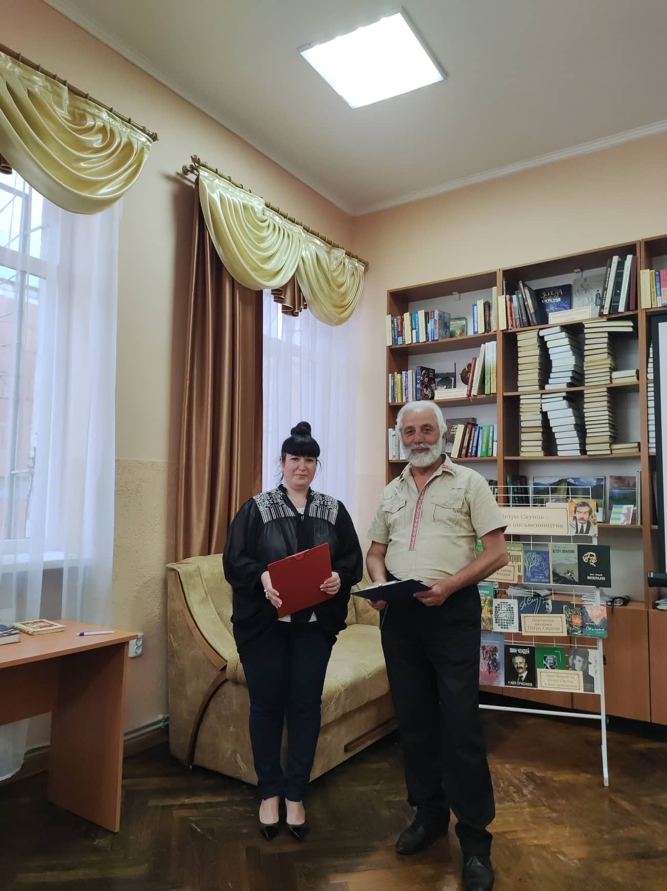
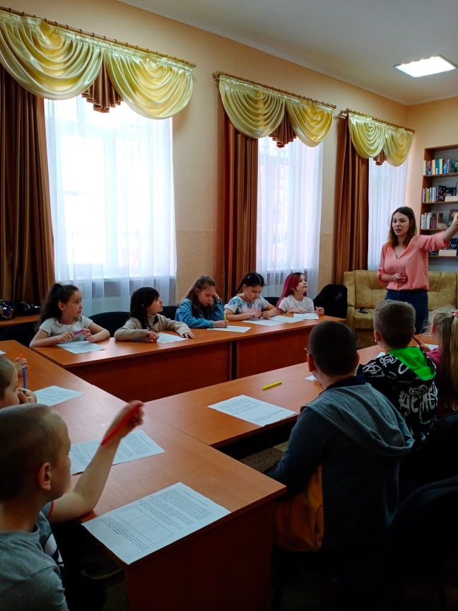
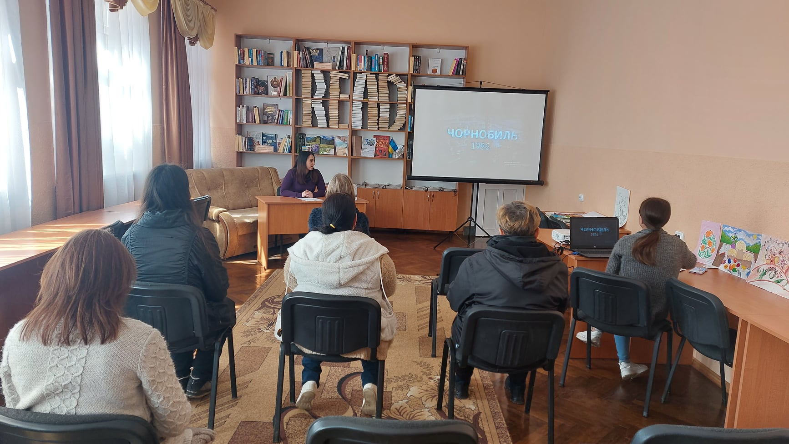
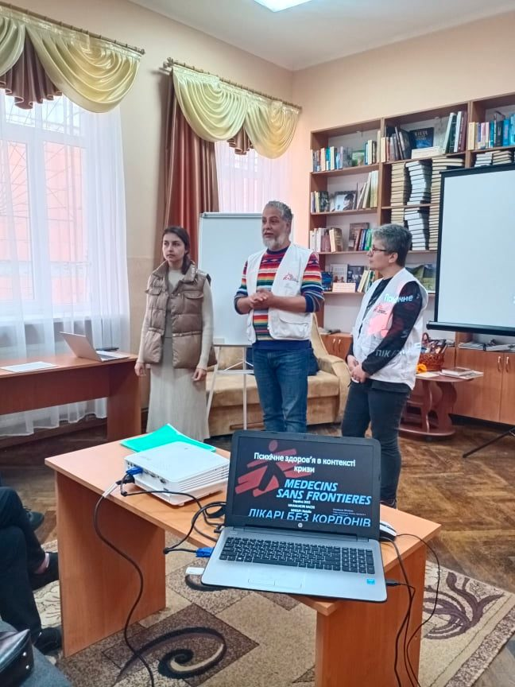
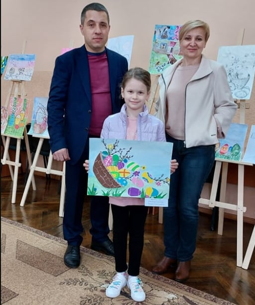

Новини

В УЖГОРОДСЬКІЙ ПУБЛІЧНІЙ БІБЛІОТЕЦІ ВІДЗНАЧИЛИ ЮВІЛЕЇ ІВАНА ЧЕНДЕЯ ТА ПЕТРА СКУНЦЯ
Напередодні відзначення ювілеїв Івана Чендея та Петра Скунця в Ужгородській публічній бібліотеці пройшов літературний вечір – спогадів «Велетні закарпатського письменництва».
Ведучими заходу були бібліотекарка читального залу Андріана Гузак та поет, педагог, журналіст Михайло Бабидорич.
Ведучі привітали присутніх і поділилися думками щодо величі постатей, ушанувати яких зібралася аудиторія. «Нині ми відзначаємо 100-річчя Івана Чендея та 80-річчя Петра Скунця – ювілеї двох великих українських письменників, громадських діячів…» з такими словами розпочався літературний вечір.
Ведучі привітали присутніх і поділилися думками щодо величі постатей, ушанувати яких зібралася аудиторія. «Нині ми відзначаємо 100-річчя Івана Чендея та 80-річчя Петра Скунця – ювілеї двох великих українських письменників, громадських діячів…» з такими словами розпочався літературний вечір.
Запрошеними гостями на заході були письменники, які товаришували і співпрацювали з ювілярами.
Читати більше...

В УЖГОРОДІ НА БАЗІ БІБЛІОТЕКИ РОЗПОЧАЛА СВОЮ ДІЯЛЬНІСТЬ «ШКОЛА ВИХІДНОГО ДНЯ»
З 14 травня і щосуботи в Ужгородській публічній бібліотеці проходить «Школа вихідного дня» для школярів молодших класів від ГО "Платформа трансформації" .
Уроки тут незвичні… На заняттях, діти розвивають логіку та ерудицію, математичні навички. А ще є крутезні уроки англійської мови.
Ще задовго до війни ГО «Платформа трансформації» мала низку проєктів, які націлені на допомогу в пошуку роботи тим, людям, які тривалий час не працювали, жінкам після декрету, людям з інвалідністю, батькам багатодітних родин, зрештою до проєкту приходили люди, які просто шукали себе професійно.
Читати більше...

ГОДИНА – РЕКВІЄМ «ПОПІЛ ЧОРНОБИЛЯ СТУКАЄ В СЕРЦЕ»
36 років тому, 26 квітня о першій годині 23 хвилин на Четвертому енергоблоці Чорнобильської атомної електростанції сталася катастрофа, яка з острахом сколихнула всю планету. Сьогодні, в нашій бібліотеці пройшла година – реквієм «Попіл Чорнобиля стукає в серце». Присутні зібралася щоб віддати шану тим, хто брав участь у ліквідації наслідків аварії на атомній станції і тим, хто був змушений залишити рідні домівки – евакуйованим та переселенцям із зони відчуження, усім тим, кого торкнулася чорним крилом ця страшна біда.

ЯК ПОВОДИТИСЯ В КРИЗОВИХ СИТУАЦІЯХ НАВЧАЛИ В УЖГОРОДСЬКІЙ ПУБЛІЧНІЙ БІБЛІОТЕЦІ
22 квітня в Ужгородській публічній бібліотеці пройшов тренінг «Психічне здоров’я в контексті кризи».
Це був тренінг про те, як надавати першу психологічну допомогу у кризових ситуаціях.
Тренінг проводили Nsiri Nasir, менеджер психічного здоров’я MSF та Наталія Касим, психологиня MSF.

В БІБЛІОТЕЦІ ВІДКРИЛАСЬ ВИСТАВКА ДИТЯЧИХ МАЛЮНКІВ УЧНІВ УЖГОРОДСЬКОЇ ШКОЛИ МИСТЕЦТВ
20 квітня в Ужгородській публічній бібліотеці відкрилась виставка дитячих малюнків учнів Ужгородської школи мистецтв. Тема представлених малюнків – Великдень.
Виставку відкрила директорка Ужгородської публічної бібліотеки Людмила Ленарт. На відкритті виставки були присутні заступник міського голови Василь Гомонай та начальник управління у справах культури, молоді та спорту Ольга Василиндра, які наголосили, що навіть в такі важкі часи для нашої країни, важливо підтримувати мистецтво та традиції нашої країни.
Віртуальні виставки